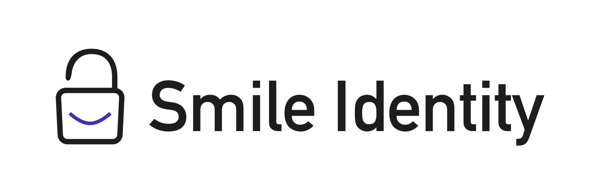

<!DOCTYPE html><html lang="en"></html><head><meta charset="utf-8"/><meta http-equiv="X-UA-Compatible" content="IE=edge"/><meta name="viewport" content="width=device-width, initial-scale=1"/><title>Smile Identity</title><meta name="description" content="KYC, Identity, and Authentication on Mobile"/><meta name="author" content="Noah Appel"/><meta name="keywords" content="undefined"/><link rel="shortcut icon" href="/favicon.png"/><link rel="apple-touch-icon-precomposed" href="/apple-touch-icon-precomposed.png"/><link rel="stylesheet" href="https://fonts.googleapis.com/css?family=Montserrat:300,400,600,700"/><link rel="stylesheet" href="../assets/styles/main.css"/><!--if lt IE 9script(src='../assets/scripts/vendor/html5shiv.min.js')
script(src='../assets/scripts/vendor/respond.min.js')--></head><body class="jobs"><section><h1>Smile Identity | SF Bay Area | Full Stack Engineer</h1><p> 
Smile Identity solves hard problems of identity for high value transactions
in low-trust environments. We are backed by Vinod Khosla, 500 Startups and CRE Venture Capital.</p><h2>The Role</h2><p> 
We are looking for someone with a passion for server side development who
wants to be a key part of the team designing a server architecture from the ground up.
We need someone flexible that can code in a bunch of web technologies while
dealing with the inevitable day to day issues of bringing a new service to life.
The job is to implement and then continuously improve our API's,
enterprise facing web, server security, and cost per transaction.</p><h2>Requirements</h2><ul><li>You love to code.</li><li>You have coded a variety of languages/technologies; in particular heroku,
sql, rails, js, html, css, python.</li><li>You are comfortable with combining web and compiled languages in a unified system.</li><li>You understand security, the need to protect our client's privacy and the integrity of our data.</li><li>You understand the need for instrumenting. We need metrics for everything.</li><li>You are highly entrepreneurial. You take the initiative to solve problems as they arise, love to troubleshoot, and are flexible.</li><li>You are a great collaborator. You know that startups are a team sport. You speak your mind but also listen to others.</li><li>You can take the heat. You are organized, do well under pressure, and can prioritize multiple tasks.</li><li>You have been part of a team that launched and maintained systems and APIs at scale.</li><li>You have worked with AWS services and components and have a deep familiarity with Linux.</li></ul><h2>Preferred Qualifications</h2><ul><li>You were a SysAdmin in a previous life.</li><li>Some C/C++ background.</li><li>Some ML background.</li><li>You are a seeker of truth and get excited about expanding access and trust in 
underserved markets around the world.</li></ul><h2>Qualified &amp; interested?</h2><p>Email resume to <a href="mailto:talent@smileidentity.com">talent@smileidentity.com</a></p></section></body>